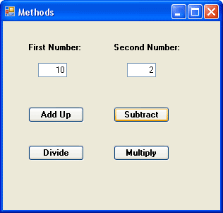
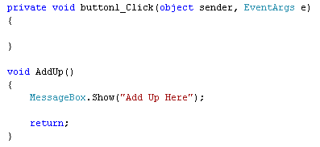
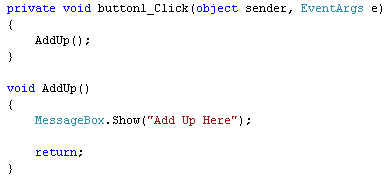

Understanding C# Methods
So far, all of your programming code has gone between the curly brackets of buttons. But this is not an effective way to programme. If you keep all your code in one place, it will become more and more unreadable the longer it gets. Instead, you can use something called a Method.
A Method is just a segment of code that does a particular job. Think about the calculator programme you have been working on. You can have one Method ( a chunk of code) to add up, one to subtract, another one to divide, and a fourth Method to multiply. The idea is that when you want to add up, you just call the Add Up Method into action.
To get you started with Methods, we'll create a simple programme that takes two numbers from text boxes. We'll have four buttons, one to add up, one to subtract, one to divide, and one to multiply. We'll use Methods to do the calculating. Off we go then!
Create a new C# project, and design the following form:

You can keep the buttons and text boxes on their default names (button1, button2, textbox1, textbox2, etc.)
Double click the Add Up button to open up the coding window. The cursor will be flashing inside of the button code. However, you create Methods outside of any other code. So move the cursor after the final curly bracket of the button code. Then hit your enter key a few times to give yourself some space. Type the following:
void AddUp()
{
MessageBox.Show("Add Up Here");
return;
}
Your coding window will then look like ours below:

Methods can return a value, such as the answer to the addition. But they don't have to. Our Method above just displays a message box when it is called into action. If you don't want anything back from your Methods, you set them up by typing the keyword void. After a space, you need to come up with a name for your Method. We've called ours AddUp. But they are just the same as variable names, and you call them almost anything you like. (The same rules apply to naming Methods as they do to naming Variables.)
After coming up with a name for your Method, you type a pair of round brackets. You can put things between the round brackets, and you'll see how to do that shortly.
After the round brackets, you need a pair of curly brackets. The code for your Method goes between the curly brackets. For us, this was just a Message Box.
Before the final curly bracket, we've typed the word return, followed
by a semicolon. This is not necessary, if you've set your Method up as void,
since you don't want it to return anything: you just want it to get on with
its job. We've added the return keyword because it's just standard practice.
But when C# sees the return keyword, it will break out of your Method. If you
type any code after that, it won't get executed. (You'll see a different way
to use the return keyword when we want to get something back from a Method.)
Calling your Methods
Our Method is not doing much good at the moment, since it's not being called into action anywhere. We'll get it to do its work when a button is clicked.
To call a Method, you just do this:
AddUp();
So you type the name of your Method, along with the round brackets. The semicolon ends the line of code, as normal.
So add that line to your button that Adds Up:

Run your programme and test it out. Click the Add Up button and you should see the message box display.
What happens is that the button calls the AddUp Method into action. C# then trots off and executes all of the code for your Method. It then comes back to the line where it was called, ready to execute any other code you may have for your button.
In the next part, you'll see how to pass values to your Methods.